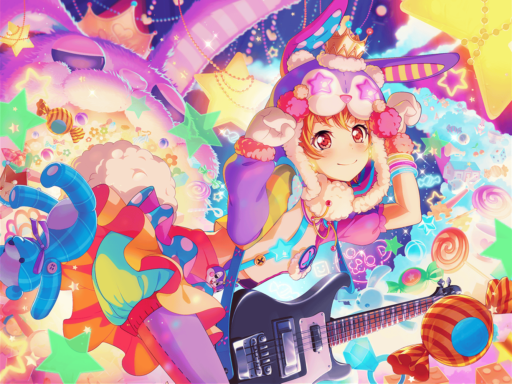

商店街
はぐみ
食べればスマイル間違いなし！
おいしいおいしい、コロッケはいかがですか〜？
はぐみ
あっ、{{userName}}さん！
いらっしゃい！
はぐみ
{{userName}}さんも、コロッケ買いにきてくれたの？
えへへっ、まいどありー！ 今日のおすすめは牛肉コロッケと、
あと串カツと、肉団子だよー！
はぐみ
あ、それから野菜コロッケと肉じゃがコロッケと……
んーっと……全部おすすめ！
はぐみ
えー、おやつがわりだから１個だけにする？
そっかー……
はぐみ
じゃあね、じゃあね、ごろごろベーコンコロッケ！
ホントに美味しいんだよ！
はぐみ
はい、どーぞ。そこで食べてく？
はぐみ
そっか！
熱いから気をつけてねー！
はぐみ
ねえ、食べてる間ちょっとだけ
はぐみの話聞いてくれる？
はぐみ
あのね、はぐみね、この前とーちゃんに頼まれて
『マリー・アンドロメダ』っていう
ふわキャラになったの
はぐみ
それで『ふわキャラ選手権』っていうのに出たんだ。
なんか、勝てば商店街が盛り上がるから！ って
とーちゃんに頼み込まれちゃって
はぐみ
この商店街から出るのって、はぐみだけだと
思ってたんだけど……
はぐみ
ミッシェルも参加するって知って……
正直、ちょっと戸惑っちゃったんだ
はぐみ
でもね、それ以上にうれしかったの！
だってあのミッシェルに、真正面からぶつかれる
チャンスなんだよ！？
はぐみ
ミッシェルって、本当にすごいんだ！
そんなミッシェルと勝負できるってなったら、
もう全力でやるしかないよっ！
はぐみ
{{userName}}さんもそう思うよね！？
はぐみ
え？ 最後のマラソン、すごかったって……
あっ！ もしかして{{userName}}さん見に来てたの！？
はぐみ
えへへ、そっかあ〜
はぐみ
……はぐみね、少し前までは勝負ってちょっと苦手だったんだ。
勝負するってことは、誰かが負けちゃうってことで……
悲しい思いをしちゃうってことだから
はぐみ
でもね、気づいたんだ。
せいいっぱい勝負すれば、負けても笑顔になれるって
はぐみ
でもそのためには、
手を抜いたり、途中で諦めたりしちゃいけない
はぐみ
本当の本当に全部を出しきって……
最後まで本気でやることが大事なんだって
はぐみ、思うんだよ
はぐみ
だからね、はぐみ、ミッシェルに全力で
ぶつかったよ！
はぐみ
もしかしたら、はぐみの気持ちがミッシェルにも
伝わったのかな？
全力のはぐみに、ミッシェルも応えてくれたんだ！
はぐみ
お互いに全力の勝負が出来たから……だから、
２人で一緒に、商店街を盛り上げていこうって
結果になったんだと思う！
はぐみ
ミッシェルとマリーがいれば、きっと無敵だよ！
商店街も、ドドーン！ と盛り上がっちゃうよね！
はぐみ
これからは、
ミッシェル＆マリー・アンドロメダで
がんばるから楽しみにしててね！
はぐみ
あ、ちょうど食べ終わったね
はぐみ
もう１個どう？
次はねー、えーっとピザコロッケ！
はぐみ
あ、もうCiRCLEに戻らないといけないのかー。
ざんねーん……
はぐみ
話、聞いてくれてありがと！
はぐみ
それじゃあまたねー！
ご来店ありがとうございましたーっ！